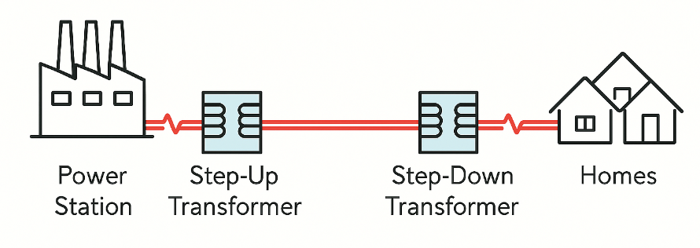

A transformer is an essential electrical device used to change the voltage of alternating current (AC) in power systems. It works on the principle of electromagnetic induction and requires AC to operate, as it relies on a changing magnetic field to induce voltage. The key components of a transformer include a primary coil, a secondary coil, and a soft iron core. When AC flows through the primary coil, it generates a changing magnetic flux in the iron core. This changing flux then induces an electromotive force (emf) in the secondary coil according to Faraday’s Law of Induction.
Transformers can either step up or step down voltages depending on the number of turns in the primary and secondary coils. In a step-up transformer, the secondary coil has more turns than the primary, resulting in a higher output voltage. Conversely, in a step-down transformer, the secondary coil has fewer turns, yielding a lower output voltage. The voltage ratio is proportional to the turns ratio, while the power ideally remains constant (ignoring losses), meaning that increasing voltage decreases current and vice versa.
The ratio of the number of turns is equal to the ratio of the voltages as shown:
$$\dfrac{V_s}{V_p} = \dfrac{N_s}{N_p}$$This equation can be rearranged to find any unknown value, such as the secondary voltage or number of turns, if the others are known. In an ideal transformer, the power input is equal to the power output:
$$V_p I_p = V_s I_s$$This implies that when voltage increases, current must decrease to conserve power, and vice versa. The ratio of currents is therefore inversely proportional to the ratio of the number of turns:
$$\dfrac{I_s}{I_p} = \dfrac{N_p}{N_s}$$Transformers play a vital role in the efficient transmission of electrical power over long distances. At the power station, electricity is generated at a relatively low voltage. To reduce energy losses during transmission, a step-up transformer is used to increase the voltage while reducing the current. This is crucial because power lost as heat in transmission wires is given by the equation Ploss = I2R, where I is the current and R is the resistance of the wires. Lowering the current significantly reduces these losses.
After the high-voltage electricity travels long distances through transmission lines, it reaches substations near towns or cities. Here, a step-down transformer is used to decrease the voltage to safer levels for domestic and industrial use. Without transformers, it would be inefficient and impractical to deliver electricity reliably and affordably over large distances. Transformers thus serve as a cornerstone of modern power distribution networks, ensuring minimal energy waste and safe voltage levels for end users.
Assuming the power transmission system is transmitting a constant amount of electrical power (ignoring losses)
This equation shows that when the voltage is increased using a step-up transformer, the current must decrease proportionally to maintain the same power:
$$ I = \frac{P}{V} $$This relationship is essential in reducing power loss during long-distance transmission, because:
$$ P_{\text{loss}} = I^2 R $$By increasing the voltage and thus reducing the current, the value of \( I^2 \) becomes much smaller, which significantly minimizes the power lost as heat in the transmission wires.
Note that we do not use $P_{\text{loss}} = \dfrac{V^2}{R} $ to calculate the power loss through the transmission wires as $V$ here should refer to the potential difference across the transmission wire alone (which is unknown), not the emf of the source.
In real-world applications, transformers are not perfectly efficient. While ideal transformers assume 100% energy transfer from the primary to the secondary coil, practical transformers experience energy losses due to several factors:
Due to these imperfections, the efficiency \( \eta \) of a transformer is less than 100% and is calculated as:
$$ \eta = \frac{P_{\text{output}}}{P_{\text{input}}} \times 100\% $$Modern power transformers are still highly efficient, often reaching efficiencies above 95%, but these losses must be accounted for in precision applications or large-scale power systems.